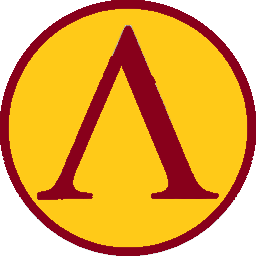

Arthan Uthyl
A Pathfinder Campaign Setting
Varsemian Isles Confederative League
The South of Varsemia once belonged to a kingdom of stoic and determined warriors, created since childhood to be the perfect war machines. A kingdom, that even when the Great Deluge came and turned their lust lands into scattered isles, they stood strong and united. Even when the Cretian Empire started their expansionism, The kingdom stood tall. Even outnumbered, they managed to defend their land from the invaders. That is, until the Battle of Spiti, where, even after being victorious, the Lampa king Pirhus fell in battle.
With the fall of the king and without successor to the throne, the old Lampa Kingdom saw itself without a leader to guide it. Thus, it was decided by the various political parties to create a reunion between the leaders of the archipelagos major cities. Akeros, Corkos, Thebae, Santea e Lamporia. Here it was agreed that the old kingdom would be divided by the different isles, with the loyalists to the old kingdom staying in the isle of Lamporia. Thus the Isle Nations of Makeronia, Corkosia, Santea and Thebae. Most recently a new city-state was formed on the Varsemian Peninsula, Bacinia, and added to the confederation.
A typical citizen from the Isle Nations of Varsemia is between 1,60m to 1,90m tall. They usually have a well defined body, due to harsh and continuous training. They have bronze skin due to the embraced life by the sea. Their haiir is usually long and braided and it’s frequent to have thick and braided beards. They eyes are dark, though there are rare exceptions.
The isles have a stratified society, which is divided into various social classes: Pathes, citizens with local parents, that have full rights; Mathakes, people created by locals; Periokoi, free people; Helots, people that are slaves, servants, etc.
Varsemian Isles States and Playable Classes
| Isle State | Inspiration | Playable Classes |
|---|---|---|
| Lamporia | Sparta | Fighter, Paladin, Cleric, Ranger, Oracle, Warpriest. |
| Santea | Athens | Fighter, Alchemist, Bard, Investigator, Rogue, Vigilante. |
| Makeronia | Macedonia | Fighter, Cavalier, Oracle, Slayer, Warpriest, Cleric. |
| Corkos | Corinth | Fighter, Slayer, Hunter, Warpriest, Swashbuckler, Investigator. |
| Tebea | Boeotian League | Fighter, Ranger, Hunter, Oracle, Warpriest. |
| Baciria | Baktria | Fighter, Hunter, Ranger, Cavalier, Cleric, Brawler. |
Lamporia
The reformed Lampa kingdom, now officially Lamporian City-State, is situated in the isle of the same name. It’s a shadow of it’s glorious past. Still, they stand proud and with the same stoic beliefs. These folk live in a diarchy, where two people govern as rulers, each from a different family, but having equal power. The responsibilities of these rulers are fundamentally religious and military, with them working above all as generals.
The judicial power resides on a group of oficials called Ephors and a counsil of elders, known as Gerousia. This council is made of twenty eight elders older then sixty springs. They are elect for life and they are usually of royal blood. It’s up to them, between many decisions, for the country to participate or not in wars.
A nation that aspires for physical perfection above mental acuity, they are known for sacrificing their deformed or not healthy babies, thus trying to keep the strongest population possible.
The women have an important and active role in Lamporian Society. They are viewed as an equal to men and have access to a strong education, most able to write, read and count. The Lamporian women can’t marry early, only after twenty winters. This is to assure that she is strong and healthy during labor, thus producing healthy children. Women are the ones that control most of the economical power. They don’t have the right to wage or go to war, but they deal and manage the territories and local commerce.
Known by their art of war, these men specialize on the clinical and lethal use of spear and shield. One line of Lamporian Hoplites is known to be unbreakable. The normal outfit of a warrior is a closed helmet, a light or medium armor, usually a breastplate, a bunch of javelins, a spear, a round metal shield, a falcata and a red cape to help against rough climate.
An extremely religious nation, these have a group of priests that have special power in Lamporian society, the Oracles. These are strong female mystics whose strong divine magic allows them to see or predict the best course of action. The Lamporians worship above everything gods of war and procreation and they practice sacrifices honoring these gods before important events, like war. Their patron god is Ahres.
Lamporian Traits
| Name | Description |
|---|---|
| Languages | Lampa Extras: Common, Cretian. |
| Skill Bonus (Men) | +2 to Survival, Perception and Intimidate checks. |
| Skill Bonus (Women) | +2 to Knowledge (Geography, History and Nobility), Diplomacy and Sense Motive checks. |
| Battleborn Men | Endurance and Diehard as extra feats for male characters at level 1. |
| Women of Power | +2 to Intelligence checks. Persuasive and Rethorical Flourish as extra feats for female characters at level 1. |
| Lamporian Hoplite | Male characters get +2 AC, +2 Atk and dmg rolls while using spear/shortspear and shield. |
| Lamporian Oracles | Female Oracles get +2 to their Spells DC and their spells are considered 1 level higher. |
| Alignment | Lawful |
| Restrictions | Can't use heavy armor nor tower shields. |
Makeronia

North of Lamporia lies the biggest isle in the Varsemian Archipelago. Makeronia. The locals, Makeronians, or officially the City State Kingdom of Makerois, inherited the nobility and pride of the ancient kingdom. These folk currently work as a diplomatic force through the archipelago. A proud nation, military wise they are known for having a strong cavalry, which is enduring, quick, organized, and perfected a clinical anti-cavalry art of war, with their armies being one of the most effective against cavalry from all human kingdoms.
The country is ruled by an absolute monarchy, currently in the reign of Marsipiter, the fourth, who is the right arm of Leonidas, the third, general of the lamporian army. Marsipiter IV is best known for paving the way for a commercial route with the Meynari, guaranteeing a much needed capital influx in the Varsemian War.
A very superstitious nation, they worship the gods vehemently, with focus on the gods of the Sun and Destiny. They are known for frequently practicing sacrifices, not only with animals, but children as well. Their patron god is Zuss.
Makeronian Traits
| Name | Description |
|---|---|
| Languages | Lampa Extras: Common, Meynari. |
| Horse Whisperers | +2 Ride (horses), Perception and Handle Animal (horses) checks. |
| Disciplined Riders | +2 AC and +4 Atk while riding a horse. |
| Legendary Anti-Cavalry | +4 Atk and +2 Damage vs Cavalry and four (or more) legged creatures. |
| Spearmen of Makeronia | +3 AC, ATK and DMG rolls while using a longspear on foot and adjacent to an ally. |
| Honor of the Ancient Kingdom | +2 to Will checks. |
| Makeronian War Horse | Makeronian horse mounts/companion have +1 HD, +2 AC and +10ft move speed. |
| Alignment | Non Chaotic and non Lawful. |
| Restrictions | Can't use Heavy Armor nor Tower Shields. |
Santea

On the Southeast region of the Varsemian Isles lies the big Island of Santea, home to the city state of Santea.
The Santeans inherited the libraries and study centers of the ancient kingdom, becoming a cultural power through the archipelago. A nation dedicated to the pursuit of knowledge, the doors of it’s cities are open to everyone who wants to follow the same path, giving them cultural recognition through all of the continent. Contrary to most of the other nations in the archipelago, the Santeans only have three social classes: Pathes, Periokoi and Helots.
Their territories are governed by a direct democracy. This is a complex political system. Decisions are made by an elite group, masters of the arts and knowledge, known as the Golden Assembly or locally as Chrysi Ecclesia, and are elected periodically by the adult male population, whose parents were born in Santea (so Pathes). The Assembly then elects between themselves a leader, who governs in periods of five years, that can be renewed if re-elected. The most successful and charismatic ruler is the current leader Pericles.
The least religious folk of the archipelago, nonetheless they maintain a strong following to the gods of arts, knowledge and protection. Their patron god is Apolnos.
In combat, they have a capable and organized infantry, expert in defending their territory.
Santean Traits
| Name | Description |
|---|---|
| Languages | Lampa Extras: Common, Cretian, Barcagenean, Muab, Rubran, Kaastian. |
| Men of Knowledge | +2 to all knowledges checks and +2 to Heal checks. |
| Santean Phalanx | +4 AC and +4 Atk while fighting with spear and shield and have an adjacent ally. |
| Santean Persuit of Knowledge | one extra GENERAL feat for characters at level 1. |
| Santean Philosophical Learning | One extra trained skill that uses either CHA, INT or WIS, at level 1. +2 bonus to all it's checks. doesn't stack with "Men of Knowledge". |
| Knowledgable Investigators | Santean Investigators get +1 extra extract per day according to their Intelligence Bonus. |
| Knowledge is Power | At level 1 a Santean character chooses a human nation. It gets +2 to Knowledges checks regarding that nation and +2 ATK against that nation's characters. |
| Restrictions | Can't use heavy armor nor tower shields. |
Corkos

North of the Santea island lies the isles of Cyzica, Phocae and Noxos, the later two are under the Corkosian League jurisdiction. The Corkosian League is an Oligarchical government where the rich rule the city state. Their capital is in the isle of Noxos.
The nation in the archipelago that prospered the most with the changes that came with the Great Deluge, these folk rapidly transformed into capable sailors, promoting their economy with sea routes and perfecting their boats, making them stronger and quicker.
Currently, the Corkosian League are one of the big superpowers in commercial and naval warfare, rivaling the Kaastian Merchant Republic and the Barcagenian Republic. This seafaring advantage made them dream of faraway lands and nowadays they are one of the best sea explorers and colonizers between the human kingdoms.
Their prosperity took them to a lavish life. Particularly the rich folk. Worshiping mainly their God of the Sea, Poisodin, who is their patron god, nonetheless, this wealth brought a strong following to the Goddess of Love, where hetairas, temple prostitutes, are highly requested and sought after.
This nation, among other things, is also known for producing the famous event of the Corinthian Games, held once every two years. Here, any men can compete in a diversity of different contests like chariot racing, wrestling, boxing and mixed martial arts. Women can compete with men in the contest of Poetry and Music.
The Corkosian Military is known to dress all black in battle and have a capable army, good in close quarters combat and expert in fighting with sword and shield, but their most notable skill in battle is from being experts at fighting in difficult terrain.
Corkosian Traits
| Name | Description |
|---|---|
| Languages | Lampa Extras: Common, Cretian. |
| Merchants of the Sea | +2 to Appraise, Swim and Profession (sailor) checks. |
| Seafarers of the Unknown | +2 AC and +2 ATK while fighting in difficult terrain or at sea. |
| Corkosian Phalanx | +2 AC and +2 DMG while fighting adjacent to an ally. |
| Corkosian Teamwork | one extra TEAMWORK feat for characters at level 1. |
| Swordsmen of the Confederation | +2 to AC and +2 to ATK rolls while using a Shortsword (or Falcata) and shield. |
| Proficiencies | Characters gain proficiency with exotic weapon Falcata at level 1. |
| Restrictions | Can't use heavy armor nor tower shields. |
Tebea

Between the isles that form the Corkosian League lies the isle of Cyzica, where the Tebean Oligarchic City State, or Tebea for short, is established. Their current ruler, Epaminondas, is an efficient general and statesman.
Tebean economy is predominantly agricultural. It’s denizens like the contact of nature and preserve the isle of being overly exploited. Thus, Cyzica is a natural wonder with amazing sight seeing places to visit. Not as prosperous or of political importance as Lamporia or Santea, nonetheless Tebean has a strong economy, with it’s grain fields feeding a part of the archipelago.
Diplomatically, Tebean have been known to have dubious choices of alliances. They’ve allied several times with the Muab and Sephs when it suited them, angering the rest of the archipelago. Also, Tebean used to be the head of the Corkosian League, but the alliance shifting made them lose that seat of power. Sworn rivals of Santea, who they see as a society going too astray from the natural wonder of mankind, skirmishes between both are frequent. Even so, Tebean put their differences aside and joined the Isles Confederation against the overwhelming power of the rising Cretian Empire. Being an effective ally during the war.
Military wise, these folk are proud fighters that know how to read the battlefield. Their warriors are resilient and agile and their expertise with blunt weapons is well known. They have a highly prestiged group of warriors called the Sacred Band of Tebea. This group consists of one hundred and fifty pairs of male lovers that form the elite force of the Tebean army and are led by the general and statesman Pelopidas. These elite warriors are legendary with slings. Last but not least, Their military is known to employ the use of big felines, where Lions and Leopards are trained since cubs to be effective partners at war.
Tebean religion is focused on the gods of farming and hunt, with their patron god being Artemiza.
Tebean Traits
| Name | Description |
|---|---|
| Languages | Lampa Extras: Common, Cretian. |
| Patrollers of the Wild | +2 to Survival, Handle Animal, Sleight of Hand and Sense Motive. |
| Sharp Mind, Agile Body | +2 to Will and Reflex Saves. |
| Battle Slingers | Weapon Focus (Sling) and Ammo Drop extra feats at character level 1. |
| Rock of Legends | +2 AC and +2 to ATK and DMG rolls while using a club and Shield. |
| Sacred Band of Tebea | +2 ATK and +4 DMG rolls with Slings. Crit Multiplier is x3 with Slings. |
| Lions of the Ancient Empire | Big Cat (Lion or Leopard) available as animal companions. These get +2 to AC and +2 to ATK and DMG rolls. |
| Alignment | Non Lawful |
| Restrictions | Can't use heavy armor nor tower shields. |
Baciria

After the successful campaign against the Cretian Empire, that made the Confederate Island States take control of the peninsula, soon that strategic land grew quickly, people from all over the human kingdoms were enticed by the prospect of a thriving new hub, a land of new opportunities. The old fort of Kerkyra quickly became an important crossroad between western and eastern kingdoms. The villages of Edisea and Corinea, once just normal fishing towns, saw their harbours become filled with boats coming from everywhere bringing exotic goods and trade. The freedom of movement, even for their former enemies, saw multiculturalism and free religion prosper, as more and more denizens of the kingdoms seeked to make a new life there.
Soon, the bursting new society saw the inevitable, they had become too big to be just small territory controlled overseas. In a politically mastered coup that saw no blood spilled, the lords of the peninsula took complete control and installed the leader of Kerkyra, Diodocus, as their monarch. This coup was badly seen with the Isles Confederation, who saw the region as important economically, still they couldn’t face it against the overwhelming support Diodocus gathered.
Diodocus first order was to rename the citadel of Kerkyra to Baciria, thus the City-State of Baciria was born.
Bacirians are an interesting breed. They are a mix society with the fundamentals of the Lamporian culture still intact, but the contact and exposition to other cultures, specially eastern ones, developed something unique. Aesthetically, their cities are still very lamporian, but it’s denizens have more meynari descendants than any other nation. This multiculturalism led to free religion, something rare in the human kingdoms. Not only that, but this cultural pot made them become curious about the world and they quickly adopted tactics and training to make them better and scouting terrain, thus making this nation good wayfarers.
Bacirian military reflects this multiculturalism. Their infantry is composed by finely trained and disciplined hoplites, martial heritage from the Islands Confederation. Their cavalry was trained by mercenary chunoi and ulnucs who taught them the fine skill of horseback archery. Also, their cavalry, with Meynari and Nahjian influences, managed to domesticate and employ as cohorts and mounts more exotic animals, like Elephants and Rhinos. To finalize this exotic mix of cavalry units is the introduction of a new breed of camels, the Bacirian Camels. These are bulkier and more resistant than their cousins, with strong fur that protects them from harsh environments. These animals are used to cross difficult terrain, making them ideal for the Bacirian caravans to go to Far East to trade goods.
While a typical Bacirian has the traditional lamporian genetic traits they have adopted an Eastern sense of fashion. Their eyes are usually eyelined, they use long turbans to cover most of their faces and they use a mixture of eastern and western weaponry.
Bacirian Traits
| Name | Description |
|---|---|
| Languages | Lampa Extras: Common, Barcagenian, Asseri, Meynari, Muab, Chientzu, Seph, Chunoi, Ulnuc. |
| Worldly Folk | +2 to Appraise and Diplomacy checks while interacting with nations the character knows the language. |
| Multiculturalized | Bacirian characters can worship any recognized pantheon of a nation they know the language. |
| Wayfarers of the Confederation | Baciran Characters ignore natural difficult terrain. |
| Western and Eastern Influences | Baciran Characters have access to both Eastern and Western Weapons and Armor; +2 to Ride and Handle Animal with horses if light or no armored and wearing a a short bow. +2 atk with short bows. +2 to AC while using a longspear on foot. |
| Exotic Cavalry Expertise | Camel, Elephant, Horse and Rhino available as animal companions. +2 Ride and Handle Animal with these animals. |
| Baciran Furry Camels | Baciran Camel mounts/companions have +1HD, +2 Natural Armor, withstand difficult weather and ignore natural difficult terrain. |
| Restrictions | Characters can't use heavy armor nor tower shields. |